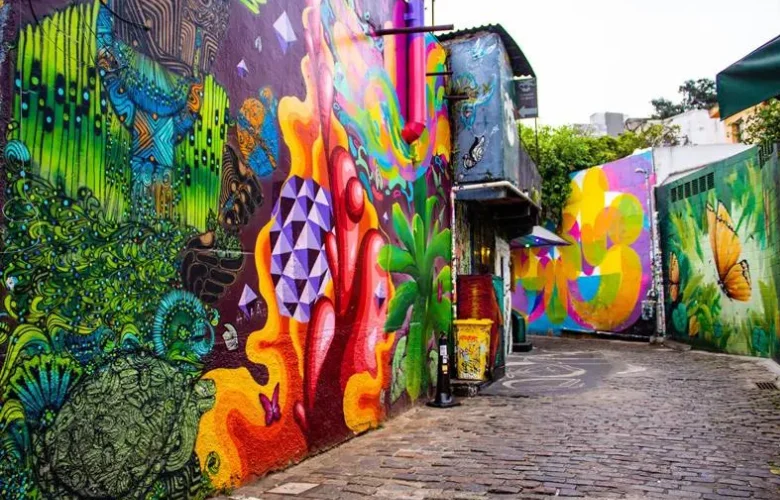

A arte urbana, ou street art, é uma manifestação cultural que transforma as metrópoles em galerias a céu aberto, rompendo as barreiras entre o público e a criação artística. Diferente das obras confinadas em museus, ela ocupa espaços comuns — muros, calçadas e túneis — para dialogar diretamente com quem transita pela cidade. Essa acessibilidade democrática redefine a paisagem urbana, trazendo cor e vida para o concreto muitas vezes monótono dos grandes centros.Historicamente, o movimento evoluiu de pichações e inscrições clandestinas para formas complexas de expressão visual, como o grafite, o stencil e o muralismo. Artistas contemporâneos utilizam diversas técnicas e materiais para imprimir sua identidade, transformando o ato de "vandalismo" em um reconhecimento estético e patrimonial. Hoje, grandes festivais de arte urbana são celebrados mundialmente, e cidades como São Paulo, Nova York e Berlim são pontos de peregrinação para quem busca apreciar essas intervenções.
Para além da estética, a arte urbana carrega um forte teor político e social. Ela funciona como um grito de resistência, dando voz a grupos marginalizados e expondo críticas ao sistema, ao consumo desenfreado e às injustiças sociais. Um mural gigante pode servir tanto como um tributo a uma figura histórica quanto como um questionamento sobre o futuro do planeta, forçando o pedestre a parar, observar e refletir sobre a realidade que o cerca.Por fim, essa forma de arte desempenha um papel crucial na revitalização de áreas degradadas, promovendo um sentimento de pertencimento e orgulho nas comunidades locais. Ao ocupar espaços esquecidos, o artista urbano devolve a dignidade ao território e cria conexões humanas através do olhar. Assim, a arte urbana se consolida não apenas como um estilo visual, mas como uma ferramenta poderosa de transformação social e renovação constante do espírito das cidades.

A arte urbana atua como um poderoso agente de transformação, redefinindo a relação entre o cidadão e o espaço público. Ao ocupar muros e monumentos, ela retira a exclusividade da arte das elites e das galerias fechadas, devolvendo-a ao povo de forma gratuita e direta. Esse impacto é sentido na democratização da cultura, onde o pedestre, independentemente de sua classe social, é convidado a interagir com obras que refletem sua própria realidade e identidade.Culturalmente, essa forma de expressão funciona como um registro histórico e social vivo. Em muitas cidades, murais tornam-se monumentos à memória coletiva, homenageando figuras locais, narrando lutas comunitárias ou denunciando injustiças que a mídia tradicional muitas vezes ignora. Esse "grito visual" fortalece o sentimento de pertencimento: quando uma comunidade vê sua história estampada em um prédio de 20 metros de altura, o espaço deixa de ser apenas concreto e passa a ser um símbolo de orgulho e herança.
Além disso, a arte urbana impulsiona uma economia criativa vibrante e o turismo cultural. Áreas antes consideradas degradadas ou perigosas são revitalizadas através do "efeito galeria", atraindo visitantes, novos negócios e investimentos. Cidades como São Paulo, com o Beco do Batman, ou Wynwood em Miami, transformaram-se em polos turísticos globais graças ao impacto visual de seus murais. Isso prova que a estética urbana não apenas embeleza, mas gera valor econômico e altera a percepção internacional sobre uma metrópole.Por fim, o impacto estende-se à linguagem e ao design contemporâneo. A estética das ruas — o uso de cores vibrantes, tipografias ousadas e o estilo do grafite — influenciou profundamente a moda, a publicidade e a arquitetura moderna. A arte urbana forçou o mundo acadêmico a expandir suas definições sobre o que é "belo" ou "erudito", consolidando-se como um dos movimentos artísticos mais relevantes do século XXI, capaz de unir o ativismo político ao mais alto nível de técnica visual.